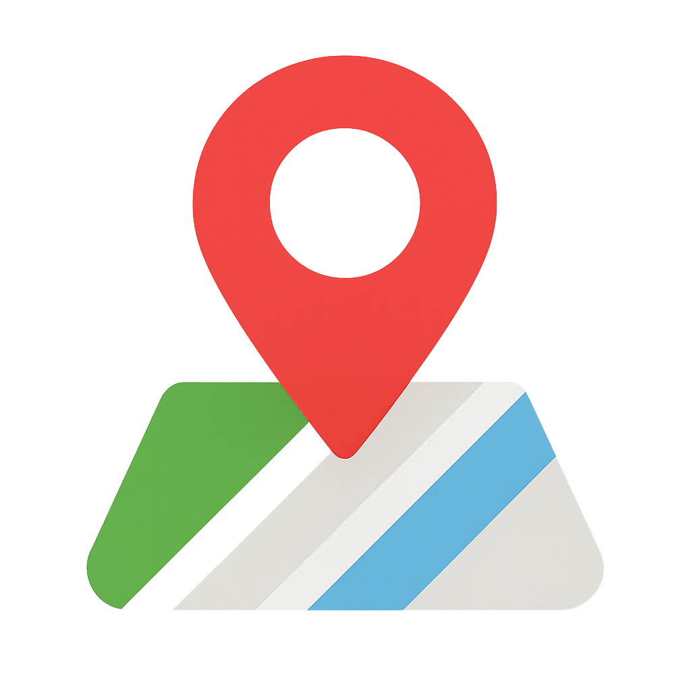

Olmos Dental
Olmos Dental
Olmos Dental
Olmos Dental
En Olmos Dental creemos que una sonrisa sana cambia la vida de las personas. Combinamos atención profesional, trato humano y tiempos de explicación claros para que siempre sepas que estamos haciendo y por qué.
Trabajos con enfoque en prevención, limpiezas con equipo profesional y tratamientos esteticos basicos, siempre buscando tratamientos conservadores y personalizados para cada paciente.
Actualmente contamos con dos consultorios ubicados en zonas estrategicas de la Ciudad de México para que puedas elegir el que te quede más cómodo.
Nuestra visión es ser un consultorio dental con alma propia, cálido y humano, donde cada paciente encuentre confianza, cercanía y acompañamiento real. Aspiramos a alejarnos de la atención fría y de los tratamientos realizados solo por vender, enfocándonos en resolver molestias de manera correcta, clara y responsable. Queremos que cada persona que nos visite se vaya con seguridad de haber entendido su tratamiento, con tranquilidad, y con la motivación de prevenir enfermedades y cuidar su salud dental. Buscamos contribuir a la recuperación de la salud, la funcionalidad y la estética de la sonrisa ofreciendo atención profesional accesible para personas con distintas posibilidades econóomicas.
Nuestra misión es brindar atención dental basada en la escucha, la revisión cuidadosa, la tranquilidad y la explicación clara de cada procedimiento, respetando los tiempos necesarios para realizar los tratamientos de forma correcta y responsable. Nos comprometemos a tratar a cada persona con honestidad y cercanía, priorizando su salud por encima de la venta, y realizando únicamente los procedimientos que realmente necesita, con los pasos completos y el cuidado adecuado. Buscamos generar confianza a través de un trato humano, profesional y ético, ayudando a nuestros pacientes a tomar dicisiones informadas y a mantener su salud dental a largo plazo.

Tuxpan #2-interior 504, Roma Sur, Cuauhtemoc, 06760 Ciudad de México, CDMX
Calle Puerto Márquez, Casas Aleman, Gustavo A. Madero, 07580, Ciudad de México, CDMX
(El número exterior del consultorio se proporcionará al confirmar la cita)
Av. Sor Juana Ines de la Cruz, 413-piso 2, Centro Industrial Tlalnepantla, 54030 Tlalnepantla, Edo. México
"Me agrado el servicio, me explico con calma cada parte del procedimiento"
"Ahora veo la importancia de tener una higiene correcta en nuestra boca, felicidades!"
"Es un Doctor muy joven y lleno de optimismo, si lo recomiendo."